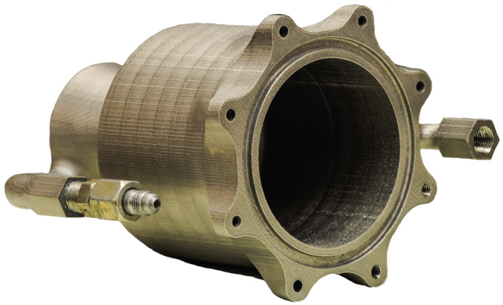

Welcome to the blog! Here, we'll keep you up to date on what we've been doing. As a taste of what's to come, let's recap the fantastic engine that we were able to create, with the help of a phenomenal sponsor:
Protolabs aided our liquid-propulled rocket team in modelling and 3-D printing the engine pictured below.
This was the result of LPRD's first attempt at crafting a flight-capable engine. It utilizes both regenerative and film cooling. It boasts ten times more thrust than our own Mk. 1. It was 3-D printed by Protolabs (insert spiel about our sponsor).
“The future of affordable rocketry is in additive construction!”
-Joseph Prom, LPRD Integrations
LPRD’s next big thing has become a stepping stone; this testing bed will pave the way for our upcoming work on the Base 11 Space Challenge.